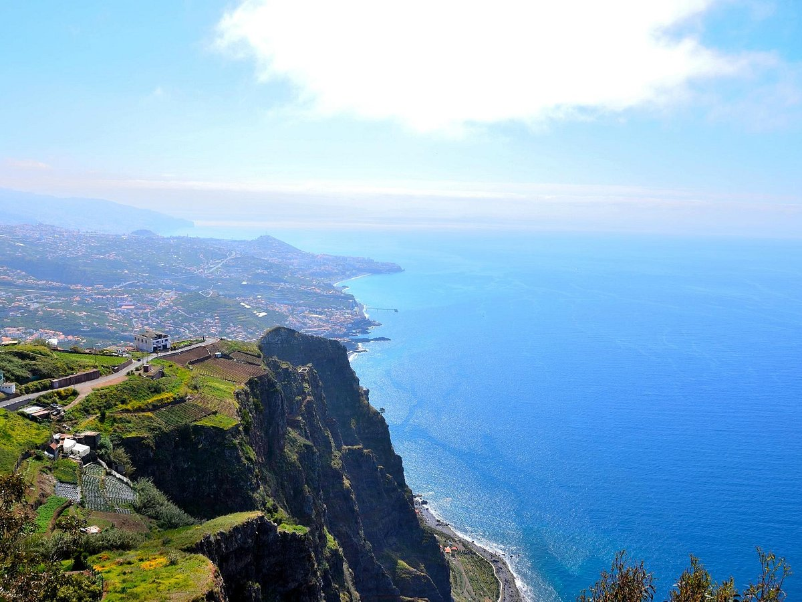
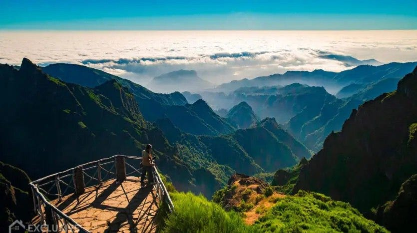
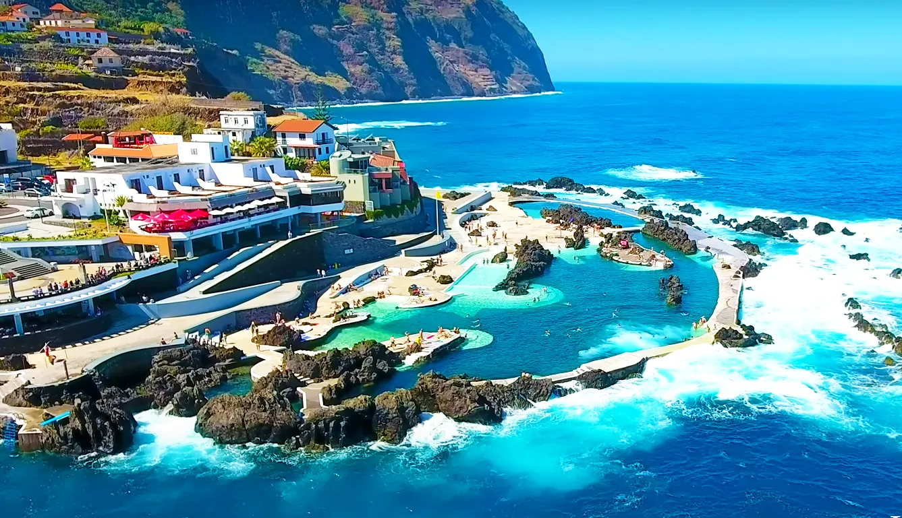

Madeira is one of two autonomous regions of Portugal. It is an archipelago situated in the North Atlantic Ocean, in a region known as Macaronesia. The archipelago includes the islands of Madeira, Porto Santo, and the Desertas, administered together with the separate archipelago of the Savage Islands. The capital of Madeira is Funchal - the largest city and the municipal seat of Portugal's Autonomous Region of Madeira, bordered by the Atlantic Ocean.
The most popular way to get to Madeira is by flight. Madeira Airport, often known as Funchal Airport and officially Cristiano Ronaldo International Airport, is one of the ten most dangerous airports in the world, as it requires pilots to perform special maneuvers. Before landing, the plane must first be directed to the mountains, and almost at the last moment, abruptly change the direction of flight and enter the runway, which is relatively short and landing is possible only in one direction. Part of the runway is partially carried on supporting columns directly into the ocean.
A lofty sea cliff located along the southern coast of the island. On top of the cabo located Skywalk - the highest cliff skywalk in Europe made of transparent glass to provide views to visitors. 
The third highest mountain on the Madeira. On a clear day it is possible to see the neighboring island of Porto Santo, 48 km to the northeast.
Natural pools formed by volcanic rocks.